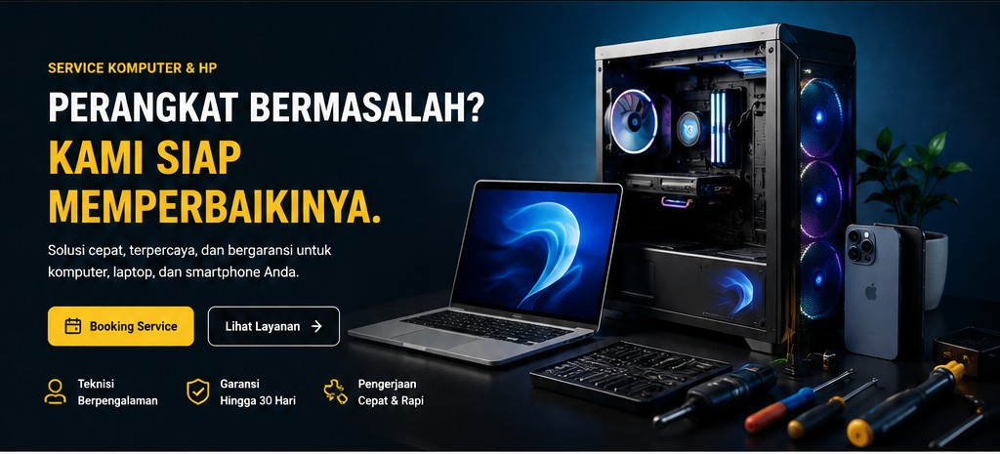

🖥️
Service Komputer
Perbaikan komputer mati total, lemot, blue screen, dan lainnya.
SERVICE KOMPUTER & HP
Solusi cepat, terpercaya, dan berpengalaman untuk komputer, laptop, smartphone, dan jaringan Anda.
LAYANAN KAMI
Kami menangani berbagai masalah perangkat dengan pelayanan terbaik.
Perbaikan komputer mati total, lemot, blue screen, dan lainnya.
Perbaikan laptop berbagai merek dengan kerusakan apapun.
Perbaikan HP Android & iPhone, software maupun hardware.
Upgrade RAM, SSD, dan hardware untuk performa maksimal.
Instal ulang, driver, aplikasi, dan perbaikan sistem.
Instalasi WiFi, LAN, setting router & troubleshooting.

TENTANG KAMI
Kami memberikan perbaikan terbaik dengan hasil memuaskan dan harga yang bersahabat.
HARGA
Instal ulang, driver, aplikasi.
Diagnosa dan perbaikan hardware.
Setting WiFi, router dan LAN.
TESTIMONI
“Pelayanannya cepat dan laptop saya kembali normal. Recommended!”— Andi, Bojonegoro
“Teknisi ramah, harga jelas dari awal, dan pengerjaan rapi.”— Rina, Lamongan
“HP saya yang mati bisa diperbaiki. Terima kasih CompTech!”— Budi, Tuban